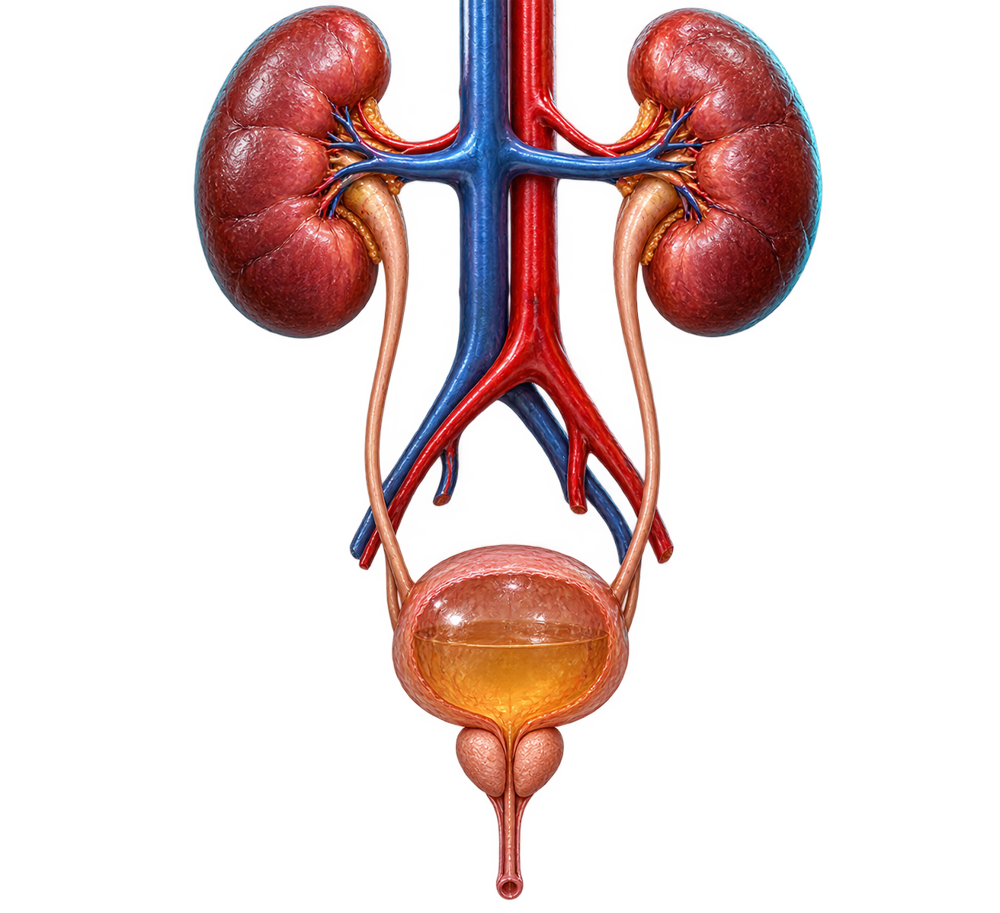

atlas urológico interactivo
fisiología urinaria masculina
modelo fisiológico activo
anatomía urinaria masculina animada

testículos · sistema reproductor
riñonesfiltran plasma, regulan agua y electrolitos y producen orina.
atlas urológico interactivo

testículos · sistema reproductor